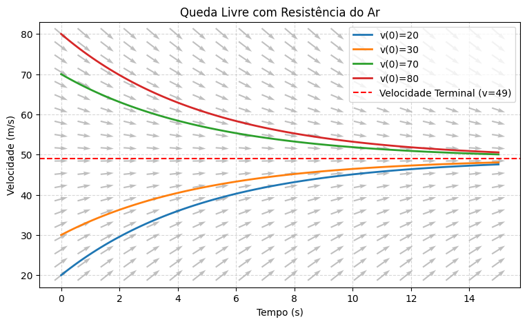
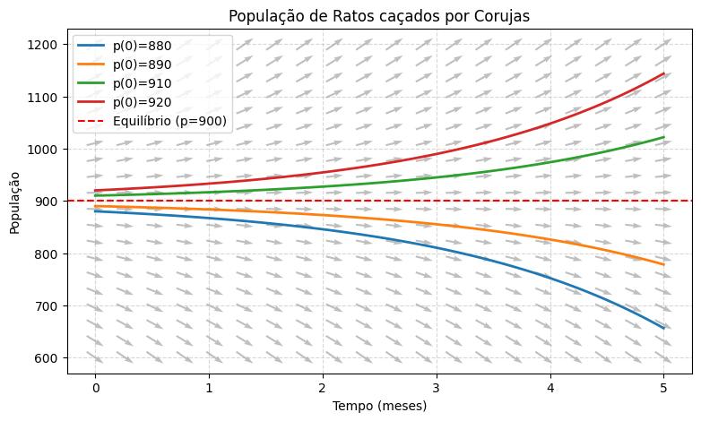
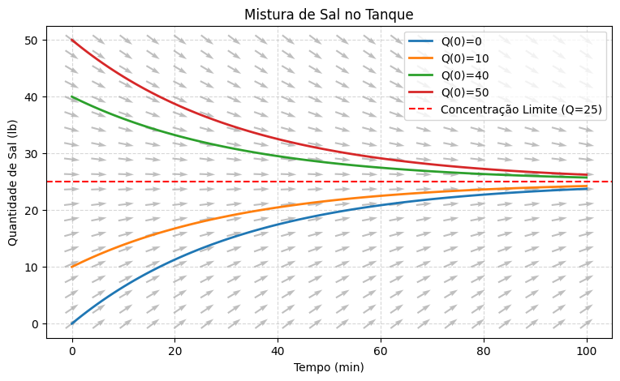

Modelagem com EDOs de 1ª Ordem#
Na introdução do curso, vimos que as EDOs são a linguagem natural para descrever fenômenos que variam no tempo. O exemplo mais clássico de todos é a equação que descreve uma taxa de variação proporcional à própria quantidade existente:
Esta equação modela desde o crescimento populacional irrestrito (Malthus, onde \(a > 0\) representa a taxa de crescimento natural) até o decaimento radioativo (onde \(a < 0\) representa a taxa de desintegração de isótopos). A solução, como já vimos intuitivamente, é a função exponencial \(y(t) = C e^{at}\).
Mas a natureza e a engenharia costumam ser um pouco mais complexas. O que acontece quando introduzimos termos extras nesses sistemas? Vamos explorar uma série de modelos clássicos que adicionam apenas uma constante \(b\) à nossa equação fundamental, transformando-a em \(y' = ay + b\).
1. Queda Livre com Resistência do Ar#
Imagine um objeto caindo na atmosfera. Pela Segunda Lei de Newton, a massa do objeto multiplicada por sua aceleração é igual à força resultante sobre ele (\(F = ma\)). A força resultante tem duas componentes: a gravidade puxando para baixo (positiva, \(mg\)) e a resistência do ar empurrando para cima (negativa, modelada como proporcional à velocidade, \(\gamma v\)).
Isso nos dá a equação: $\(m \frac{dv}{dt} = mg - \gamma v\)$
Se dividirmos tudo pela massa \(m\), obtemos: $\(\frac{dv}{dt} = -\frac{\gamma}{m}v + g\)$
Para um objeto de 10 kg e um coeficiente de resistência \(\gamma = 2\) kg/s, usando a gravidade \(g = 9.8\) m/s², chegamos à equação: $\(\frac{dv}{dt} = -0.2v + 9.8\)$
import numpy as np
import matplotlib.pyplot as plt
def f_queda(t, v):
return -0.2 * v + 9.8
t_grid = np.linspace(0, 15, 20)
v_grid = np.linspace(20, 80, 20)
T, V = np.meshgrid(t_grid, v_grid)
dT = np.ones(T.shape)
dV = f_queda(T, V)
L = np.sqrt(dT**2 + dV**2)
plt.figure(figsize=(9, 5))
# Definindo um "passo" no tempo visual para o tamanho das setas
dt_step = (15 - 0) / 20 * 0.6 # 60% do espaçamento da grade no eixo t
dT = np.ones(T.shape) * dt_step
dV = f_queda(T, V) * dt_step
plt.figure(figsize=(9, 5))
# angles='xy', scale_units='xy', scale=1 força a seta a ter exatamente a largura dt_step e altura dV
plt.quiver(T, V, dT, dV, color='gray', alpha=0.5, pivot='mid',
angles='xy', scale_units='xy', scale=1)
# Soluções com diferentes velocidades iniciais
t_smooth = np.linspace(0, 15, 100)
for v0 in [20, 30, 70, 80]:
v_sol = 49 + (v0 - 49) * np.exp(-0.2 * t_smooth)
plt.plot(t_smooth, v_sol, linewidth=2, label=f'v(0)={v0}')
plt.axhline(49, color='red', linestyle='--', label='Velocidade Terminal (v=49)')
plt.title("Queda Livre com Resistência do Ar")
plt.xlabel("Tempo (s)")
plt.ylabel("Velocidade (m/s)")
plt.legend(loc='upper right')
plt.grid(True, linestyle='--', alpha=0.5)
plt.show()
<Figure size 900x500 with 0 Axes>

O modelo mostra claramente uma «velocidade terminal» de 49 m/s. Não importa se o objeto é solto do repouso ou atirado rapidamente para baixo: a resistência do ar entra em equilíbrio com a gravidade, estabilizando a queda.
Note que se resolvermos igualarmos a taxa de variação da velocidade à zero, \(dv/dt=0\), temos
Para os valores acima, temos \(v_{eq}=9.8/0.2=49m/s\). Assim, a velocidade terminal não é \(49 m/s\) por acaso. Esta é a velocidade de equilíbrio, onde a força de resistência do ar iguala a acelaração da força peso, e a velocidade não muda!
2. Ratos e Corujas (Dinâmica Populacional)#
Considere uma população de ratos do campo que, sem predadores, cresce a uma taxa de 50% ao mês. Sua EDO seria \(p' = 0.5p\). Agora, introduza corujas que caçam e comem 450 ratos por mês. O modelo passa a ser:
Esta EDO é um caso particular da EDO
onde \(r>0\) representa a taxa de reprodução da populção \(p\) e \(k>0\) representa uma taxa de predação constante de \(k\) indivíduos por mês.
def f_ratos(t, p):
return 0.5 * p - 450
t_grid = np.linspace(0, 5, 20)
p_grid = np.linspace(600, 1200, 20)
T, P = np.meshgrid(t_grid, p_grid)
dT = np.ones(T.shape)
dP = f_ratos(T, P)
L = np.sqrt(dT**2 + dP**2)
plt.figure(figsize=(9, 5))
# O tempo vai de 0 a 5 com 20 pontos
dt_step = (5 - 0) / 20 * 0.6
dT = np.ones(T.shape) * dt_step
dP = f_ratos(T, P) * dt_step
plt.figure(figsize=(9, 5))
plt.quiver(T, P, dT, dP, color='gray', alpha=0.5, pivot='mid',
angles='xy', scale_units='xy', scale=1)
t_smooth = np.linspace(0, 5, 100)
for p0 in [880, 890, 910, 920]:
p_sol = 900 + (p0 - 900) * np.exp(0.5 * t_smooth)
plt.plot(t_smooth, p_sol, linewidth=2, label=f'p(0)={p0}')
plt.axhline(900, color='red', linestyle='--', label='Equilíbrio (p=900)')
plt.title("População de Ratos caçados por Corujas")
plt.xlabel("Tempo (meses)")
plt.ylabel("População")
plt.legend(loc='upper left')
plt.grid(True, linestyle='--', alpha=0.5)
plt.show()
<Figure size 900x500 with 0 Axes>

Observe a diferença qualitativa para o modelo de queda livre. Aqui, o equilíbrio em \(p=900\) é instável. Se houver 901 ratos no início, a população explode. Se houver 899, as corujas eventualmente extinguem os ratos.
3. A Lei de Resfriamento de Newton#
Quando você tira uma peça quente do forno, a taxa com a qual ela perde calor é proporcional à diferença de temperatura entre a peça (\(T\)) e o ambiente ao seu redor (\(T_a\)).
Expandindo, temos \(T' = -kT + kT_a\). Novamente, a mesma estrutura \(y' = ay + b\), onde \(a = -k\) (garantindo que a temperatura não exploda para o infinito). Todas as soluções fluem gradativamente para a temperatura ambiente.
4. Mistura em Tanques#
Um tanque contém 100 galões de água. Água com concentração de sal de 0.25 lb/gal entra no tanque a uma taxa de 3 gal/min, e a mistura homogênea é drenada na mesma taxa de 3 gal/min.
A variação de sal \(Q(t)\) é a diferença entre a taxa de entrada e a taxa de saída.
Entrada: 3 gal/min * 0.25 lb/gal = 0.75 lb/min
Saída: 3 gal/min * (Q / 100) lb/gal = 0.03 Q lb/min
O modelo é: $\(\frac{dQ}{dt} = -0.03Q + 0.75\)$
def f_mistura(t, q):
return -0.03 * q + 0.75
t_grid = np.linspace(0, 100, 20)
q_grid = np.linspace(0, 50, 20)
T, Q = np.meshgrid(t_grid, q_grid)
dT = np.ones(T.shape)
dQ = f_mistura(T, Q)
L = np.sqrt(dT**2 + dQ**2)
plt.figure(figsize=(9, 5))
plt.quiver(T, Q, dT/L, dQ/L, color='gray', alpha=0.5, pivot='mid')
t_smooth = np.linspace(0, 100, 100)
for q0 in [0, 10, 40, 50]:
q_sol = 25 + (q0 - 25) * np.exp(-0.03 * t_smooth)
plt.plot(t_smooth, q_sol, linewidth=2, label=f'Q(0)={q0}')
plt.axhline(25, color='red', linestyle='--', label='Concentração Limite (Q=25)')
plt.title("Mistura de Sal no Tanque")
plt.xlabel("Tempo (min)")
plt.ylabel("Quantidade de Sal (lb)")
plt.legend(loc='upper right')
plt.grid(True, linestyle='--', alpha=0.5)
plt.show()

5. Investimentos e Juros Compostos#
Suponha um investimento com rendimento contínuo de 8% ao ano (\(r=0.08\)). Além disso, o investidor faz aportes contínuos de R\( 2000 por ano. A taxa de variação do saldo \)S(t)$ será os juros rendendo sobre o saldo atual mais a entrada fixa de dinheiro:
Como a taxa que multiplica a variável (\(0.08\)) é positiva, o saldo decolará exponencialmente. Se a pessoa fizesse retiradas de R$ 2000, o termo seria negativo, e o saldo poderia eventualmente zerar se não houvesse capital suficiente para sustentar as retiradas através dos juros.
Algo em comum#
O que um objeto caindo de um avião, ratos sendo caçados por corujas, uma barra de metal esfriando, o fluxo de poluentes num lago e sua conta bancária têm em comum?
Em todos os exemplos acima, a equação que modelou o fenômeno tinha exatamente o mesmo formato matemático:
onde \(a\) e \(b\) são constantes reais dadas pelas condições do problema físico.
Estes exemplos mostram o poder unificador da matemática, especialmente das equações diferenciais: problemas diferentes descritos por uma mesma equação. Vamos investigar esta equação mais a fundo na próxima seção.
Ainda mais: na matemática, quando diversos problemas diferentes culminam na mesma equação abstrata, ganhamos uma vantagem tremenda: resolvemos a equação de uma vez por todas, e a solução servirá para todos os problemas simultaneamente.
Resolvendo a Equação \(y' = ay + b\)#
Vamos encontrar a fórmula geral que soluciona essa EDO. Assumindo que \(a \neq 0\), podemos colocar a constante \(a\) em evidência no lado direito:
Esta é uma equação separável! Passamos tudo que tem \(y\) para um lado e integramos:
Para isolar a variável \(y\), aplicamos a função exponencial de ambos os lados:
Podemos substituir \(\pm e^C\) por uma nova constante genérica \(c\). Finalmente, isolando \(y(t)\), chegamos à nossa solução geral:
Se soubermos a condição inicial \(y(0) = y_0\), a constante \(c\) fica perfeitamente definida como \(c = y_0 + \frac{b}{a}\), e a solução do Problema de Valor Inicial será:
O segredo está no sinal de \(a\)#
Olhando para a fórmula da solução, notamos um termo fixo (\(-b/a\)) e um termo exponencial que multiplica o desvio inicial. A constante \(a\) dita o destino de todo o sistema!
Se calcularmos o equilíbrio (ou seja, quando a taxa de variação zera, \(y' = 0\)), descobrimos que o equilíbrio é exatamente \(y = -b/a\).
Se \(a > 0\): A exponencial \(e^{at}\) cresce para o infinito. Isso significa que qualquer pequeno desvio da posição de equilíbrio será amplificado explosivamente. O sistema «foge» do equilíbrio. É o que vimos acontecer no Modelo de Ratos e Corujas (explosão populacional ou extinção) e na Conta Bancária (juros compostos).
Se \(a < 0\): A exponencial \(e^{at}\) tende a zero com o passar do tempo. Isso significa que a parte transitória da solução morre, e o sistema é inevitavelmente «sugado» para o equilíbrio \(-b/a\). É o que garante que o Objeto em Queda Livre encontre a velocidade terminal, que o metal atinja a Temperatura Ambiente, e que a Mistura de Sal estabilize.
Generalizações para o futuro#
Construir modelos onde as taxas são constantes é um ótimo ponto de partida, mas em projetos de engenharia complexos, o cenário muda.
O que acontece se a taxa de depósito na conta bancária variar todo mês? Ou se o coeficiente de resistência do ar de um foguete mudar à medida que ele consome combustível e fica mais leve? Nesses casos, \(a\) e \(b\) deixam de ser constantes e passam a ser funções do tempo, gerando as EDOs Lineares de 1ª Ordem Não Autônomas (\(y' = a(t)y + b(t)\)).
E se a resistência do ar não for proporcional à velocidade, mas sim ao quadrado da velocidade, como em aerodinâmica avançada? Isso introduz termos como \(v^2\), tornando a equação Não Linear.
Nas próximas aulas, deixaremos de apenas contemplar campos de direções para aprender técnicas analíticas poderosas (como o método do Fator Integrante) capazes de extrair as soluções exatas para essas equações mais robustas.